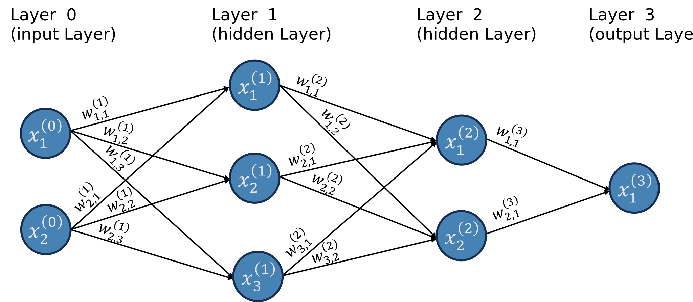
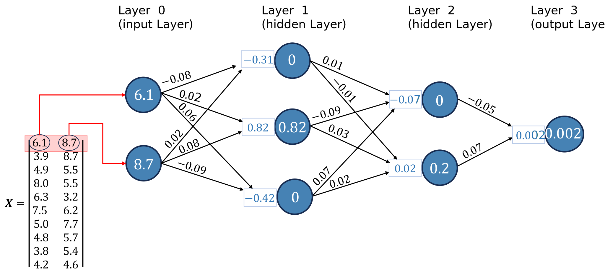
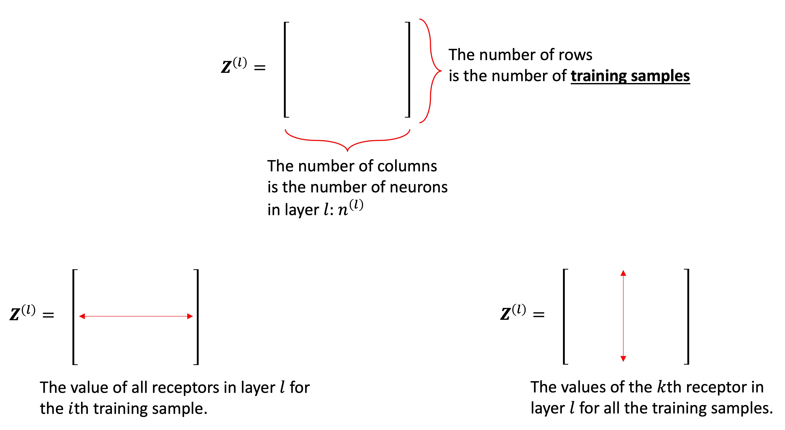
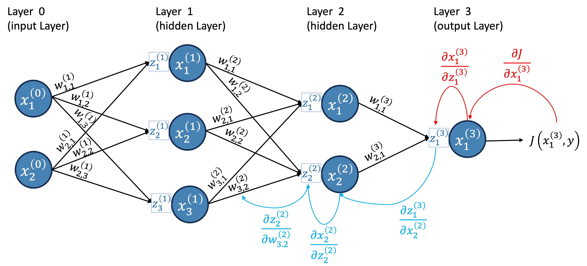

function createNeuralNetwork(layers, div_name, drawZSquares=true, neuronRadius = 20, squareSize = 20, width = 1000, height = 400) {
const layerWidth = width / layers.length;
//const fontSize = neuronRadius / 2; // Set font size proportional to neuron radius
const fontSize = 14;
squareSize = drawZSquares ? squareSize : -2;
// Clear previous content
//d3.select(`#${div_name}`).html('');
// Create SVG element for lines and neurons
const svg = d3.select(`#${div_name}`).append("svg")
.attr("width", width)
.attr("height", height)
.style("position", "absolute");
// Function to calculate Y positions
const calculateY = (layerIndex, nodeIndex, totalNodes) => {
const spacing = height / (totalNodes + 1);
return (nodeIndex + 1) * spacing;
};
// Draw connections (lines) and weight annotations
for (let l = 0; l < layers.length - 1; l++) {
for (let i = 0; i < layers[l]; i++) {
for (let j = 0; j < layers[l + 1]; j++) {
const x1 = (l + 0.5) * layerWidth;
const y1 = calculateY(l, i, layers[l]);
const x2 = (l + 1.5) * layerWidth - neuronRadius - squareSize - 2;
const y2 = calculateY(l + 1, j, layers[l + 1]);
// Draw line
svg.append("line")
.attr("x1", x1)
.attr("y1", y1)
.attr("x2", x2)
.attr("y2", y2)
.attr("stroke", "black")
.attr("stroke-width", 1);
// Calculate position and rotation for weight annotation
const scaler = 0.8;
const annotationX = x1 + neuronRadius + (drawZSquares ? 10 : 20);
const slope = (y2 - y1) / (x2 - x1);
const angle = Math.atan(slope) * (180 / Math.PI);
const annotationY = y1 + slope * (annotationX - x1) - scaler*fontSize - 2;
const weightAnnotation = `w_{${j + 1}${i + 1}}^{(${l + 1})}`;
d3.select(`#${div_name}`).append("div")
.attr("class", "weight-annotation")
.style("left", `${annotationX}px`)
.style("top", `${annotationY}px`)
.style("font-size", `${scaler*fontSize}px`)
.style("transform", `translateY(-50%) rotate(${angle}deg)`)
.html(`\\(${weightAnnotation}\\)`);
}
}
}
// Draw neurons and neuron annotations
layers.forEach((numNeurons, layerIndex) => {
const x = (layerIndex + 0.5) * layerWidth;
const layerAnnotation = `Layer ${layerIndex}`;
svg.append("text")
.attr("x", x)
.attr("y", 20) // Position at the top, you can adjust this value
.attr("text-anchor", "middle")
.attr("font-family", "Arial")
.attr("font-size", "16px")
.text(layerAnnotation);
for (let i = 0; i < numNeurons; i++) {
const y = calculateY(layerIndex, i, numNeurons);
// Draw neuron
svg.append("circle")
.attr("cx", x)
.attr("cy", y)
.attr("r", neuronRadius)
.attr("fill", "steelblue");
// Add neuron annotation
const neuronAnnotation = `x_{${i + 1}}^{(${layerIndex})}`;
d3.select(`#${div_name}`).append("div")
.attr("class", "neuron-annotation")
.style("left", `${x}px`)
.style("top", `${y}px`)
.style("font-size", `${fontSize}px`)
.style('color', 'white')
.html(`\\(${neuronAnnotation}\\)`);
// Draw annotation for non-input neurons
if (layerIndex > 0 && drawZSquares) {
const rectX = x - neuronRadius - squareSize - 1;
const rectY = y - squareSize / 2;
const squareAnnotation = `z_{${i + 1}}^{(${layerIndex})}`;
d3.select(`#${div_name}`).append("div")
.attr("class", "annotation")
.style("left", `${rectX}px`)
.style("top", `${rectY}px`)
.style("width", `${squareSize}px`)
.style("height", `${squareSize}px`)
.style("line-height", `${squareSize}px`)
.style("font-size", `${0.8*fontSize}px`)
.html(`\\(${squareAnnotation}\\)`)
.on("click", () => propagateFromZSquare(layerIndex, i));;
}
}
});
// Function to animate impulse
function animateImpulse(startX, startY, endX, endY, duration) {
const impulse = svg.append("circle")
.attr("cx", startX)
.attr("cy", startY)
.attr("r", 5)
.attr("fill", "red");
impulse.transition()
.duration(duration)
.attr("cx", endX)
.attr("cy", endY)
.on("end", () => impulse.remove());
}
// Function to propagate impulse
function propagateImpulse(layerIndex, neuronIndex) {
if (layerIndex < layers.length - 1) {
for (let j = 0; j < layers[layerIndex + 1]; j++) {
const startX = (layerIndex + 0.5) * layerWidth;
const startY = calculateY(layerIndex, neuronIndex, layers[layerIndex]);
const endX = (layerIndex + 1.5) * layerWidth - neuronRadius - squareSize - 2;
const endY = calculateY(layerIndex + 1, j, layers[layerIndex + 1]);
animateImpulse(startX, startY, endX, endY, 1200);
// Recursive call for next layer
setTimeout(() => propagateImpulse(layerIndex + 1, j), 1000);
}
}
}
// Function to propagate impulse from a Z square
function propagateFromZSquare(layerIndex, neuronIndex) {
if (layerIndex < layers.length - 1) {
for (let j = 0; j < layers[layerIndex + 1]; j++) {
const startX = (layerIndex + 0.5) * layerWidth;
const startY = calculateY(layerIndex, neuronIndex, layers[layerIndex]) + squareSize / 2;
const endX = (layerIndex + 1.5) * layerWidth - neuronRadius - squareSize - 2;
const endY = calculateY(layerIndex + 1, j, layers[layerIndex + 1]);
animateImpulse(startX, startY, endX, endY, 1200);
}
}
}
// Draw neurons and neuron annotations
layers.forEach((numNeurons, layerIndex) => {
for (let i = 0; i < numNeurons; i++) {
const x = (layerIndex + 0.5) * layerWidth;
const y = calculateY(layerIndex, i, numNeurons);
// Draw neuron
svg.append("circle")
.attr("cx", x)
.attr("cy", y)
.attr("r", neuronRadius)
.attr("fill", "steelblue")
.attr("cursor", "pointer")
.on("click", () => propagateImpulse(layerIndex, i));
}
});
// Render MathJax
MathJax.typesetPromise();
}Learning Objectives and Pre-Requisites
In this tutorial, we will explore how feedforward neural networks work. We’ll discuss neurons, layers, activation functions, and cost functions. Then, we’ll see in detail how we train a neural network using backpropagation. We will derive the backpropagation formulae step-by-step and implement a neural network from scratch using Python’s Numpy package only.
Learning Objectives:
At the end of this tutorial, the reader should be able to:
- Calculate the forward pass of a neural network;
- Calculate the backpropagation of a neural network;
- Implement a neural network from scratch in Python;
- Implement a neural network using PyTorch;
Prerequisites:
It is assumed that the reader:
- is proficient in computing derivatives, particularly in the application of the Chain Rule.
- has some Python knowledge;
- is able to perform matrix multiplication;
Introduction
Neural Networks are certainly among the most “famous†models in machine learning. They power many tools that we use nowadays, from computer vision to generative models and medical applications. If this is not the first post you’ve read about neural networks, you surely have seen a diagram like the one below.

When I started learning about neural networks, I found the standard diagram confusing because it doesn’t explicitly show a crucial component that will be needed later for the backpropagation algorithm. Therefore, for this tutorial, we will explicitly include this component in the diagram, as shown in Figure 2.
Let’s introduce some terminology:
Layers: This neuron network has four layers.
- Input layer: the first layer is known as the input layer; it brings the data into the network.
- Output layer: the last layer is known as the output layer; it provides the numerical outputs of the neural network.
- Hidden layers: the layers between the input and output layers are known as the hidden layers; in this case, layers 1 and 2 are hidden layers.
Neurons: the blue circles are the so-called neurons; neurons send a numerical value as a signal for the neurons in the following layer.
- Different layers can have different numbers of neurons.
- The signals neurons in the input layer send are the data.
- The number of neurons in the input layer is the number of attributes in the dataset.
- Activation function: a non-linear function that specifies how neurons process the signals they receive. This function is not explicitly showed in the graph, but it is “inside†the neuron.
Weights: the weights are numerical values (positive or negative) that amplify or reduce the strength of a neuron’s signal to another neuron; they are represented in the graph by the lines;
Receptors: we will call the boxes attached to each neuron the neuron’s receptor, which will collect and aggregate all the signals a neuron receives from other neurons (this is not standard language);
I’ve always found the terminology very confusing without looking at the equations. For example, when I say that weights amplify or reduce the signal, how exactly does that happen? How exactly do receptors collect and aggregate all the signals? How do neurons process the signals passed by the receptors? Before we go over these in detail, let’s review the notation we are using.
Notation
- \((l)\) refers to the layer, and goes from 0 to \(L\), where the \(L\)th layer is the output layer.
- \(n^{(l)}\) is the number of neurons in layer \(l\).
- \(x^{(l)}_{k}\) is the \(k\)th neuron in layer \(l\).
- \(x^{(l)}_{i,k}\) is the value of the \(k\)th neuron in layer \(l\) for the \(i\)th training sample.
- \(z^{(l)}_{k}\) is the receptor of neuron \(x^{(l)}_k\).
- \(z^{(l)}_{i,k}\) is the value of the receptor of neuron \(x^{(l)}_k\) for the \(i\)th training sample.
- \(w_{i,j}^{(l)}\) is the weight connecting the \(i\)th neuron in layer \(l-1\) to the \(j\)th neuron in layer \(l\).
- \(b^{(l)}_k\) the bias term added by the receptor of neuron \(k\) in layer \(l\).
Since we have a ton of weights, it is helpful for us to organize them into matrices. We will have one weight matrix per layer (except for layer 0). We will denote the matrices as \({\bf{W}}^{(l)}\). Figure 4 illustrates how the weights are organized into matrices for our example neural network.

The matrix \({\bf{W}}^{(l)}\) contains the weights connecting neurons in layer \(l-1\) to neurons in layer \(l\). It has \(n^{(l-1)}\) rows and \(n^{(l)}\) columns. The \(i\)th row of \({\bf{W}}^{(l)}\) are all weights “leaving†neuron \(i\) from layer \(l-1\). The \(j\)th column of \({\bf{W}}^{(l)}\) are all the weights “arriving†in neuron \(j\) in layer \(l-1\). Figure 5 illustrates these points.
For example, the second row of \({\bf{W}}^{(2)}\) has all the weights leaving neuron 2 from layer 1, as shown in Figure 6; while the second column has all the weights arriving at neuron 2 in layer 2, as illustrated in Figure 7.
Now that we understand the notation, we are ready to introduce the necessary equations.
- Receptors: The value of the \(k\)th receptor in layer \(l\) for the \(i\)th training sample is given by: \[z^{(l)}_{i, k} =\sum_{j=1}^{n^{(l-1)}} w^{(l)}_{j, k}x^{(l-1)}_{i,j} + b^{(l)}_k,\quad l=1,...,L, \quad \text{and} \quad j=1,...,n^{(l)}\]
- Neurons (for the \(i\)th training sample): \[x^{(l)}_{i, k}=a\left(z^{(l)}_{i, k}\right),\quad l=1,...,L, \quad \text{and} \quad j=1,...,n^{(l)}\] where \(a\) is a non-linear function called activation function. We will discuss activation functions in more detail later. For now, we will use \(a(x)=\max\left\{0, x\right\}\).
- Note: for the input layer, \(l=0\), \(x^{(0)}_j\) is just the feature \(j\) of the input vector.
Okay, I agree; the notation is heavy. We have a lot of things to keep track of, such as layers, receptors, neurons, and weights, so we need a lot of symbols and indices. For this reason, I encourage the reader to go back to Figure 2, pick a neuron in a hidden layer, and write down the equations for that neuron while identifying the elements being used in the diagram.
Example 1 For us to go through an example of the feedforward part of the neural network, let us get some synthetic data with two features as well as define some values for the weights.
Now, we can calculate the forward pass of the neural network. Let’s do it for the first row in our data, i.e., for the input vector \(x=(6.1, 8.7)\).
Receptors in Layer 1: \[z^{(1)}_1 =\sum_{i=1}^{2} w^{(1)}_{i, 1}x^{(0)}_i = -0.314\] \[z^{(1)}_2 =\sum_{i=1}^{2} w^{(1)}_{i, 2}x^{(0)}_i = 0.818\] \[z^{(1)}_3 =\sum_{i=1}^{2} w^{(1)}_{i, 3}x^{(0)}_i = -0.417\]
Receptors in Layer 2: \[z^{(2)}_1 =\sum_{i=1}^{3} w^{(2)}_{i, 1}x^{(1)}_i = -0.07362\] \[z^{(2)}_2 =\sum_{i=1}^{3} w^{(2)}_{i, 2}x^{(1)}_i = 0.02454\]
Receptor in Layer 3: \[z^{(3)}_1 =\sum_{i=1}^{2} w^{(3)}_{i, 1}x^{(1)}_i = 0.0017178\]
Neurons in Layer 1: \[x^{(1)}_1 = \max\left\{0, z^{(1)}_1\right\} = 0\ \ \ \ \ \ \textcolor{white}{\sum_{i=1}^{2}}\] \[x^{(1)}_2 = \max\left\{0, z^{(1)}_2\right\} = 0.818 \textcolor{white}{\sum_{i=1}^{2}}\] \[x^{(1)}_3 = \max\left\{0, z^{(1)}_3\right\} = 0\ \ \ \ \ \ \textcolor{white}{\sum_{i=1}^{2}}\]
Neurons in Layer 2: \[x^{(2)}_1 = \max\left\{0, z^{(2)}_1\right\} = 0\ \ \ \ \ \ \ \ \ \ \textcolor{white}{\sum_{i=1}^{2}}\] \[x^{(2)}_2 = \max\left\{0, z^{(2)}_2\right\} = 0.02454 \textcolor{white}{\sum_{i=1}^{2}}\]
Neuron in Layer 3: \[x^{(3)}_1 = z^{(3)}_1 = 0.0017178\]
Let’s now visualize this result in the diagram. We will use two decimal places due to space constraints.

Congratulations! You have completed the forward pass of the neural network.
I’ll just note here that the activation function used in the output layer usually changes according to the problem. For example, for regression problems, a common choice is the identity function \(f(z) = z\). If we used \(f(z) = \max\left\{0, z\right\}\), we would never be able to predict a negative value, an undesirable property.
Matrix Notation
To implement a Neural Network in Python from scratch, we will need to use the highly optimized Numpy’s vectorization; so, let’s introduce the matrix notation here. The matrix notation also has the advantage of simplifying the steps. Note that everything is almost exactly the same; the only difference is that, with the matrix notation, we will be considering the entire dataset.
We will denote matrices with capital bold letters (e.g., \(\bf{X}\), \({\bf{W}}^{(1)}\)), vectors as lowercase bold letters (e.g., \({\bf{x}}_1\)). Also, vectors are always column vectors (multiple rows, one column). Here are the equations in matrix format:
Receptors: \[ {\bf{Z}}^{(l)} = {\mathbf{X}^{(l-1)}} \mathbf{W}^{(l)} + \mathbf{1}_n\left(\mathbf{b}^{(l)}\right)^T \tag{1}\] where \(\mathbf{1}_n\) is a column vector of ones with \(n\) rows and \(T\) stands for transpose. The operation \(\mathbf{1}\left(\mathbf{b}^{(l)}\right)^T\) is Numpy’s broadcast.
Neurons: \[ {\bf{X}}^{(l)} = a\left({\bf{Z}}^{(l)}\right) \tag{2}\] where \(a\left({\bf{Z}}^{(l)}\right)\) means we apply the activation function \(a\) to every single element of \({\bf{Z}}^{(l)}\).
The notation becomes much simpler, doesn’t it? Let’s take a closer look at \({\bf{Z}}^{(l)}\) in Figure 10 .

Now, let’s go through Example 1 again, but this time, we will use matrix notation.
Example 2 We will use the same data and weights as before, as shown in Figure 8. The forward pass involves calculating the values of the receptors and neurons for each layer of the network and each input vector. We will start by calculating \({\bf{Z}}^{(1)}\), \({\bf{X}}^{(1)}\), \({\bf{Z}}^{(2)}\), \({\bf{X}}^{(2)}\), \({\bf{Z}}^{(3)}\), and \({\bf{X}}^{(3)}\) for all input vectors. We will first do it mathematically, then we will implement it in Python.
- We start by calculating \({\bf{Z}}^{(1)}\) and \({\bf{X}}^{(1)}\):
- Using the results from the first layer, we can calculate \({\bf{Z}}^{(2)}\) and \({\bf{X}}^{(2)}\):
- Using the results from the second layer, we can calculate \({\bf{Z}}^{(3)}\) and \({\bf{X}}^{(3)}\):
Now that we have the results for all layers and all input vectors, we can implement the forward pass of the neural network in Python. We start by generating the data and initializing the weights.
Great, this matches the data and weights in Figure 8.
Next, we can calculate \({\bf{Z}}^{(1)}\), \({\bf{Z}}^{(2)}\), and \({\bf{Z}}^{(3)}\) and \({\bf{X}}^{(1)}\), \({\bf{X}}^{(2)}\), and \({\bf{X}}^{(3)}\)
We successfully calculated the values of the receptors and neurons for all layers and input vectors using NumPy’s vectorization.
By now, you should have a clear understanding of how the forward pass operates. If not, do not move to the next section. Practice a little more with the information above. There is a lot going on; the notation is heavy, and the matrix notation is a bit confusing at first. Once you are comfortable with the forward pass, we can move on to the backpropagation algorithm. Backpropagation is the algorithm we use to train the neural network. Without training, the output of the neural network is meaningless.
Backpropagation
Backpropagation is a critical algorithm employed in the training of neural networks. Its foundation lies in the chain rule of calculus, which allows us to compute how changes in the weights affect the overall performance of the network. The algorithm is named for its distinctive process of error propagation. The algorithm transmits the error from the output layer back through the various layers of the network all the way to the input layer. During this backward pass, the algorithm essentially assesses how much each weight contributed to the overall error, allowing for precise adjustments to be made. By updating these weights using the calculated gradients, the network can gradually improve its predictions and performance.
Measuring the error: the cost function
Before we delve into the backpropagation algorithm, we need to define a cost function. The cost function quantifies how inaccurate the network’s predictions are. The goal of the training process is to minimize this cost function.
For example, for regression, a commonly used cost function is:
\[ J(\mathbf{w}|\mathbf{X}, \mathbf{y}) = \frac{1}{2n}\sum_{i=1}^{n} \left(\hat{y}_i - y_i\right)^2 \tag{3}\]
where \(\hat{y}_i\) is the predicted value for the \(i\)th sample, \(y_i\) is the true value, and \(n\) is the number of samples. Note that the cost function depends on the weights \(\mathbf{w}\), the input data \(\mathbf{X}\), and the true values \(\mathbf{y}\). But the input data and true values are fixed (it is the data we have); we can only change the weights. Classification problems have different cost functions, such as the cross-entropy loss (let’s not worry about this for now).
The backpropagation algorithm
The entire idea of backpropagation is to calculate the gradient of the cost function with respect to the weights. To do this, we need to pass through the elements of the network in reverse order. We will start by calculating the gradient of the cost function with respect to the neurons in the output layer. Then, we will calculate the gradient of the cost function with respect to the receptors in the output layer. Finally, we will calculate the gradient of the cost function with respect to the weights.
To visualize the backpropagation step-by-step, let us know so we can update our neural network diagram with the cost function, as shown in Figure 14.
For now, let’s do this for a single input vector (as if our data matrix \(X\) had only one row). Remember, the weights are the only thing we can change; the data and true values are fixed. So, we want to calculate the gradient of the cost function with respect to the weights. Let’s start with the output layer and calculate the derivative of \(w_{1,1}^{(3)}\). We will calculate this derivative using the chain rule:
First, we calculate the derivative of the cost function with respect to the neuron \(x^{(3)}_1\): \(\frac{\partial J}{\partial x^{(3)}_1}\).
Then, we calculate the derivative of the neuron \(x^{(3)}_1\) with respect to the receptor \(z^{(3)}_1\): \(\frac{\partial x^{(3)}_1}{\partial z^{(3)}_1}\).
Finally, we calculate the derivative of the receptor \(z^{(3)}_1\) with respect to the weight \(w_{1,1}^{(3)}\): \(\frac{\partial z^{(3)}_1}{\partial w_{1,1}^{(3)}}\)
Then, we combine these using the chain rule: \[ \frac{\partial J}{\partial w_{1,1}^{(3)}} = \frac{\partial J}{\partial x^{(3)}_1}\frac{\partial x^{(3)}_1}{\partial z^{(3)}_1}\frac{\partial z^{(3)}_1}{\partial w_{1,1}^{(3)}} \]
Figure 15 illustrates the calculation of the derivative of \(w_{1,1}^{(3)}\).
All that is left for us to do now is to calculate the derivatives. To be able to do this, we need to specify the cost and activation functions. We will use the mean squared error cost function and the ReLU activation function we have used so far.
\[ \frac{\partial J}{\partial x^{(3)}_1} = \frac{\partial}{\partial x^{(3)}_1}\left[\frac{1}{2}\left(x^{(3)}_1 - y_1\right)^2\right] = x^{(3)}_1 - y_1 \]
Next, remember we are using the identity function as the activation function for the last layer since this is a regression problem, i.e., \(x^{(3)}_1=z^{(3)}_1\). \[ \frac{\partial x^{(3)}_1}{\partial z^{(3)}_1} = \frac{\partial}{\partial z^{(3)}_1}z^{(3)}_1 = 1 \]
Finally, \[ \frac{\partial z^{(3)}_1}{\partial w_{1,1}^{(3)}} = \frac{\partial}{\partial w_{1,1}^{(3)}}\left[\sum_{i=1}^{2} w^{(3)}_{i, 1}x^{(2)}_i\right] = x^{(2)}_1 \]
Note the presence of \(x^{(2)}_1\) and \(x^{(3)}_1\) in the derivatives. These are the values obtained in the forward pass. The diagram Figure 16 illustrates the values of the derivatives for the example we have been working on.
Z3, X3, and X2 in the python code above.)
Therefore, the derivative of \(w_{1,1}^{(3)}\) is: \[ \frac{\partial J}{\partial w_{1,1}^{(3)}} = (x^{(3)}_1 - y_1) \times 1 \times x^{(2)}_1 = (0.0017178 - 113) \times 1 \times 0 = 0 \]
Similarly, we can calculate the derivative of \(w_{2,1}^{(3)}\):
\[ \frac{\partial J}{\partial w_{2,1}^{(3)}} = (0.0017178 - 113) \times 1 \times 0.2 = -22.6 \]
Hopefully, at this point, you are convinced that we can calculate the derivatives of the output layer weights. Now, let’s see how to calculate the derivative of a weight in the hidden layers. We will start by calculating the derivative of \(w_{3,2}^{(2)}\). Figure 18 illustrates the calculation of the derivative of \(w_{3,2}^{(2)}\).

The key aspect here is for you to see that we just “expand†the path (note the blue path in Figure 18). The red part of the path has already been calculated in the previous step, which is the derivative of \(w_{2,1}^{(3)}\). Therefore, we just need to multiply the partial derivatives in the blue part of the path to get the derivative of \(w_{3,2}^{(2)}\).
\[ \frac{\partial J}{\partial w_{3,2}^{(2)}} = \frac{\partial J}{\partial x^{(3)}_1}\frac{\partial x^{(3)}_1}{\partial z^{(3)}_1}\frac{\partial z^{(3)}_1}{\partial x^{(2)}_1}\frac{\partial x^{(2)}_1}{\partial z^{(2)}_2}\frac{\partial z^{(2)}_2}{\partial w_{3,2}^{(2)}} \]